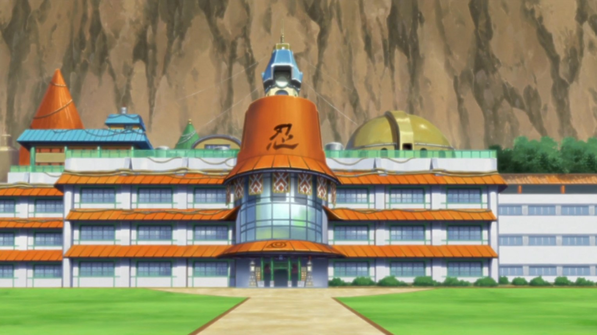
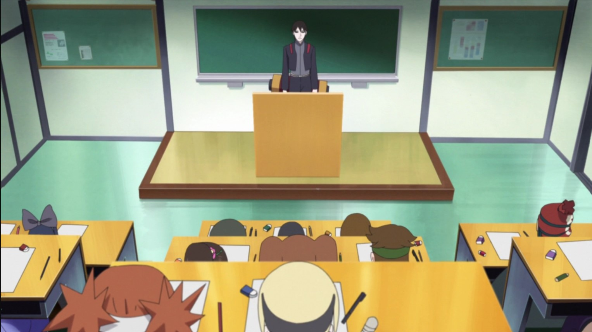

Halaman Akademi
Akademi ini cukup besar dan terdiri dari beberapa bangunan yang didirikan dari waktu ke waktu. Bangunan ini dapat dikenali oleh beberapa pohon yang terdapat di depannya, yang memiliki ayunan di atasnya, juga terdapat tanda raksasa dengan huruf kanji untuk Api (火) di atasnya.
Ruangan Kelas
Ruang kelas yang terdapat didalamnya cukup besar dan memiliki langit-langit yang tinggi. Hal ini didasarkan pada teori bahwa, ruang kelas yang besar akan berpengaruh terhadap pendidikan yang luas pula, bahkan papan tulis itu sendiri. Di depan papan tulis terdapat semacam podium, dimana terletak jauh dari meja para murid, dan hal ini digunakan para guru untuk dapat melihat semua murid sekaligus.
Divisi Administrasi
Seiring berkembangnya, dan menjadi sebuah sekolah, bangunan ini juga merupakan area di mana kantor Hokage berada, dimana merupakan tempat misi sehari-hari sebuah desa berlangsung dan diberikan. Kantor Hokage cukup besar, terdapat meja yang berbentuk oval, dimana biasanya terdapat tumpukan dokumen yang belum selesai. Di belakang meja Hokage terdapat jendela yang besar, disini seorang Hokage dapat mensurvei seluruh desa. Di meja itu sendiri terdapat tulisan kanji yang memiliki arti Bayangan (影, kage) yang disampingnya juga terdapat simbol desa. Ada juga Meja Penugasan Misi, di mana misi ini biasanya dibagikan ke shinobi. Dalam anime, the Pangkalan Siaga Jōnin terletak di area markas.